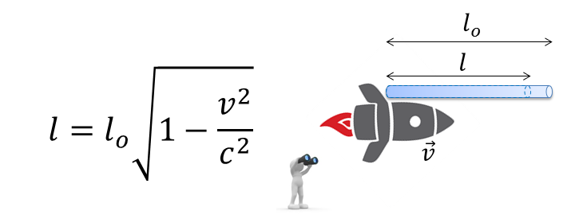
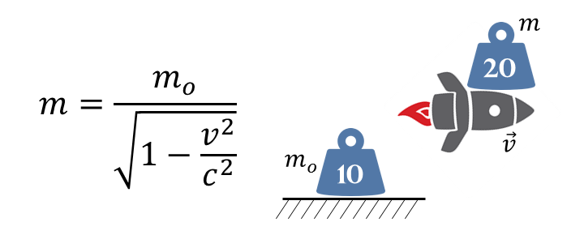
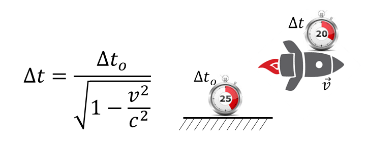
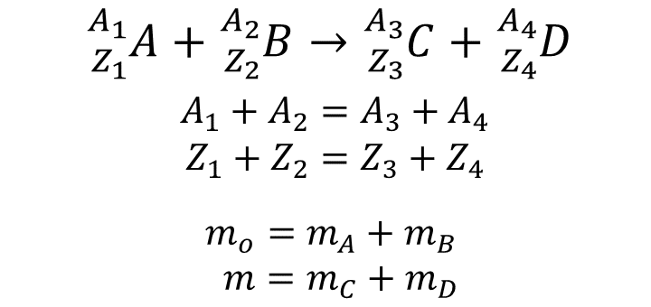
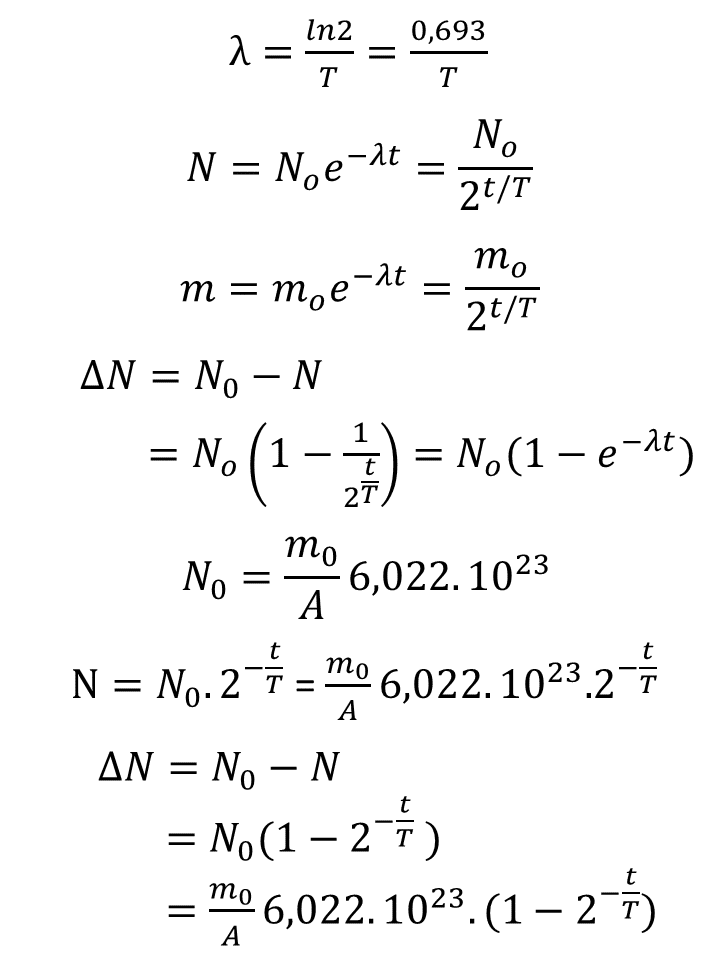
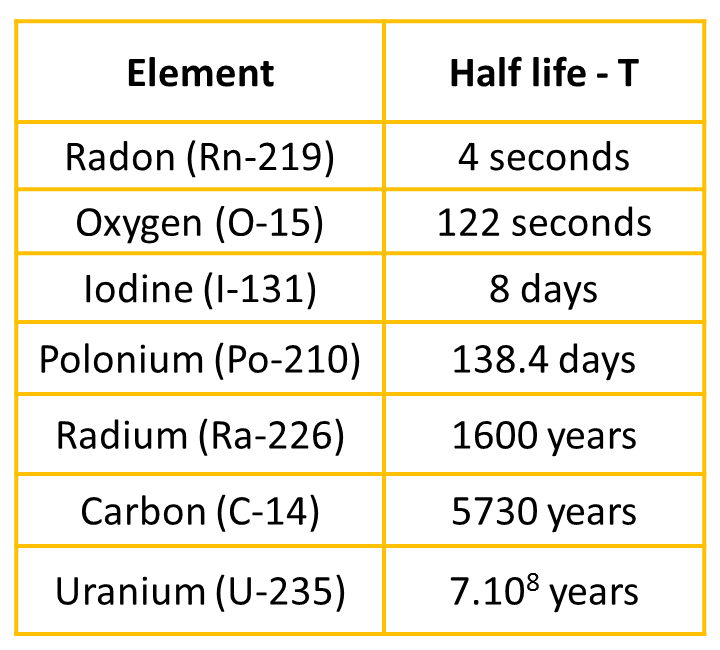
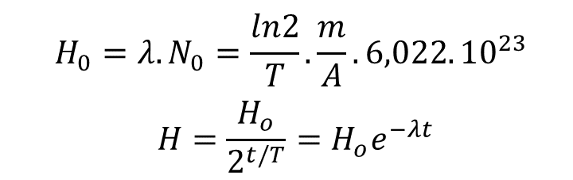

1. THEORY OF RELATIVITY
MASS–ENERGY EQUIVALENCE
m: mass (kg), E: energy of object (J), c: speed of light (m/s)
LENGTH CONTRACTION
l_o: real length of object, l: length observed by an observer moving with speed v

RELATIVISTIC MASS
m_o: rest mass, m: relativistic mass of object when moving with speed v

TIME DILATION

2. ATOMIC NUCLEUS
NUCLEAR MAKEUP
Z: number of protons, N: number of neutrons, A: mass number
NUCLEAR REACTION

- m<m_o: nuclear reaction releases energy
- m>m_o: nuclear reaction absorbs energy
RADIOACTIVE DECAY
N_o: initial amount of active substance, N: quantity that still remains and has not yet decayed after a time t, ∆N: amount of decayed substance, m_o: initial mass, m: mass of remaining, λ: decay constant, t: time, T: half-life

Half life of some elements

AMOUNT OF RADIOACTIVITY
H_o: initial amount of radioactivity, H: amount of radioactivity at time t
